When you issue an invoice, you expect that at some time in the future it will be paid. There are two ways such payments can be handled in MoneyWorks:
As a receipt coded against the debtor in question;
Using the <EquationVariables>Batch Debtors Receipts</EquationVariables> command. This is the efficient way to enter a large number of receipts at one time.
Note: If the receipt is being made for an already issued invoice, all you need to do is tell MoneyWorks how much of the invoice has been paid. So you are not allocating the receipt to any income accounts; instead you are assigning it to one or more existing invoices.
If you have just one or two invoice receipts to process you can use the receipts entry screen. In general, it is faster to use the Batch Debtors Receipts command.
Note that the Receivables view in the Transaction list shows a complete list of posted invoices that have not been fully paid.
If you have just a few invoice receipts to process, use the following method:
To do this you should have the transactions window topmost and press Ctrl- N/⌘-N., and if necessary set the type of the new transaction.
Tip: To receive payment against a particular invoice, right-click on the invoice in the Receivables list and choose Receipt this Invoice.
This is essential so that MoneyWorks can check for outstanding invoices for the debtor. The From field will be automatically filled in with the customer name, and a list of outstanding invoices will be shown under the Payment on Invoice tab.
If the payment is from a head office, enter the head office code—any invoices made out to it or to any of its branches will be made available for paying — see Head Office Billing.
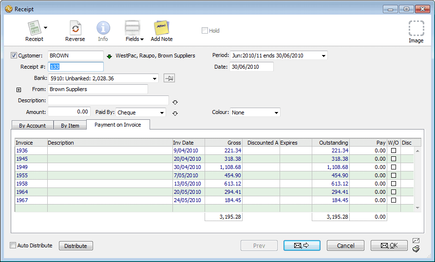
If you are not going to bank the money immediately, you should receipt the money into a banking holding account and use the Banking command when you actually bank the money.
If you leave the Description field blank, MoneyWorks will put in a list of the invoices you are paying when the transaction is saved.
Set the payment method in the Paid By pop-up menu
If you don’t care about the payment method you can leave this set to None. However if you are using the Banking command to print a deposit slip, you will want to differentiate cash from cheques.
If the Paid By pop-up menu is itself highlighted, you can press Ctrl- downarrow/⌘-downarrow.
The Receipt details screen will be displayed—the details of this depend on whether you are processing a credit card or another form of payment.
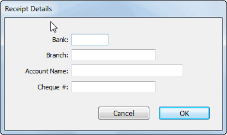
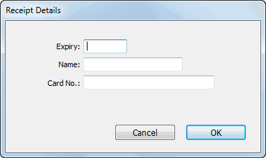
Enter the details of the receipt. Note that you only need to enter the cheque/card details if they differ from those stored on the customer record (as displayed next to the customer code).
Allocate the Amount to the outstanding invoices
See Allocating Receipts to Invoices for details.
Clicking Cancel will discard the transaction.
Note: The receipt transaction will be automatically posted. You will not be able to change it once it is accepted, although if it is incorrect you will be able to cancel it and reprocess the receipt.
If some of the invoices are marked to be written-off or you have allowed prompt payment discounts, the following dialog box will be displayed when you click the OK or the Next button:
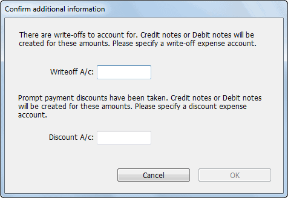
You need to nominate the writeoff and/or the prompt payment discount account (if you cannot remember the code, press tab to display the account choices). Click Accept & Post to process the receipt, or Cancel to take you back to the receipt window.
Use the Batch Debtor Receipts command in the Commands menu to enter a batch of payments for debtor invoices. This allows you to enter, print and, if necessary, correct any errors before committing (whereas individual receipts must be posted immediately). A restriction is that you cannot enter more than one receipt for the same debtor in the same batch2.
When you enter the debtor code, a list of all the outstanding invoices for that debtor is displayed, enabling you to allocate the total cheque amount as payment received for particular invoices. Partial payments, prompt payment discounts, overpayments and underpayments can all be catered for. You can modify any of the receipts entered in the session to correct mistakes.
When you click the Accept button, a Receipt transaction is created for each receipt that you have entered. These debit the specified bank account (which you nominate in the Confirmation dialog box after you click Accept) and credit the accounts receivable account(s) for the debtors (and adjusts each debtor’s balance accordingly).
All receipts in a batch must be in the same currency.
The Batch Debtor Receipts window appears.
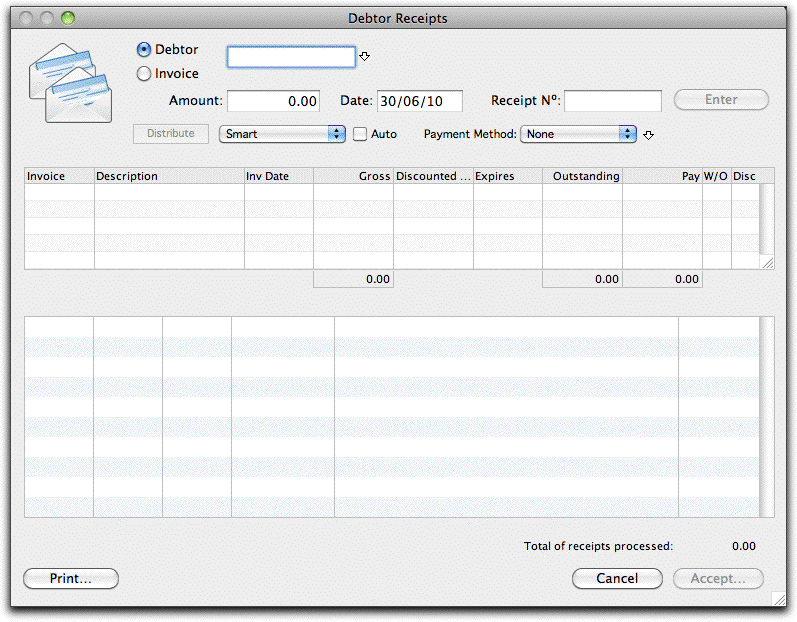
All outstanding invoices that are not on Hold for the debtor will be listed.
If the payment is from a head office, enter the head office code—any invoices made out to it or to any of its branches will be made available for paying - see Head Office Billing.
If you type in an invoice number, MoneyWorks will recognise it as such and will replace it with the code for the debtor to whom the invoice was sent. If you want to enter an invoice number that happens to be the same as a debtor code, you need to click the Invoice radio button to force MoneyWorks to treat the number as an invoice rather than as a debtor code.
If you are not sure of the debtor code press Tab to bring up a list of debtors, then double-click on the desired debtor to enter it.
At this point, MoneyWorks will enter the debtor code into the Receipt Nº field. If you want serial receipt numbers to be entered instead, just overtype this with the number. MoneyWorks will automatically increment the receipt number for the next receipt that you enter. Receipt numbers can be prefixed by one or more non-numeric characters (e.g. CR101).
If you choose the Process Debtor Receipts command while you have some highlighted debtors in the Names list, MoneyWorks will automatically fill in the Debtor code in the Debtor Receipts dialog box for you. When you press keypad-enter after each receipt, the next code will be entered ready for the next receipt.
This amount will need to be allocated to the unpaid invoices— see
This is used to calculate the prompt payment discount.
Select the Payment Method
If paying by cheque or credit card, you can enter the cheque/card details by clicking the down arrow next to this menu.
See Allocating Receipts to Invoices for details.
The information entered for this receipt is added to the summary list at the bottom of the dialog box and the fields at the top of the dialog box are cleared ready for you to enter the next receipt.
If the amount allocated to the invoices is greater than the cheque amount, the Enter button will be dimmed.
If the allocated amount is less than the cheque amount, the balance will be credited to the debtor’s account as an overpayment. Debtors with overpayments have a “•” in the O/P column in the debtors list. This balance can be reallocated against future transactions for that debtor. See the next section for more information.
If the debtor has overpaid or underpaid by some trivial amount, you may want to “write off” the difference. This will also be the case if you have offered a prompt-payment discount and the customer has taken advantage of it— see Write Off Option.
Next time you come to enter a receipt for a debtor who has previously overpaid, a dialog box will appear to inform you that there are unallocated overpayments, and showing these in a list.
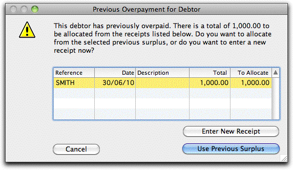
Enter New Receipt If you click Enter New Receipt, you will be able to enter a receipt as normal. The overpayment will not be used to pay invoices.
Use Previous Surplus If you click Use Previous Surplus, MoneyWorks will fill in the receipt Amount field with the value of the overpayment that is highlighted in the overpayment list (only one overpayment may be highlighted). You can then use that amount to pay or partially pay one or more of the new invoices for the debtor. If you actually have a new cheque from the debtor as well, you will need to enter it as part of a new batch of receipts (do this by choosing the Process Debtor Receipts command again after you have accepted this batch).
You can click Cancel if you want to go back and process a different debtor.
Until you click the Accept button, the receipt data that you have entered is not permanently stored. You can modify the information just as you can modify unposted transactions.
To modify the details for one of the receipts that you have entered:
The debtor code, cheque total, receipt number and list of invoices with allocated payments appear in the top part of the dialog box.
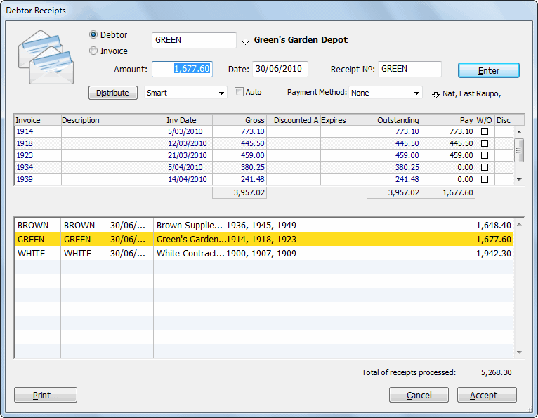
When the changes have been made click the Enter button, or press the keypad- enter key on the keyboard to enter the changes
When you have finished entering a batch of receipts, you may wish to print an allocation summary. If you require a bank deposit slip, you should receipt the money into a banking holding account and print the deposit slip from the Banking command when you actually bank the money — see The Banking Command.
Click the Print button
The summary will list each receipt and the invoice(s) it paid.
When you have entered all of the receipts, you need to Accept the batch. This will create the actual Receipt transactions and automatically post them.
The Accept button will be disabled if there is an unfinished receipt in the top half of the dialog box.
A confirmation dialog box appears.
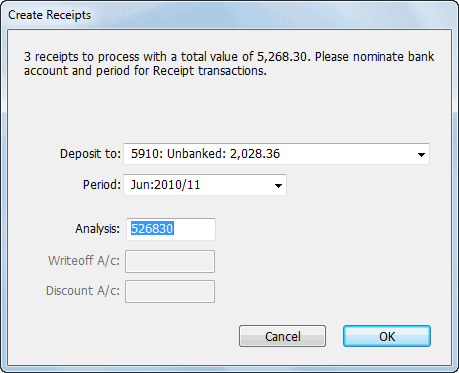
If you are not going to bank this money immediately, choose a Bank Holding account into which to place the money. Use the Banking command when you finally bank the money
This will default to the current period, as determined by today’s date. Every receipt in the batch, regardless of the individual receipt date, will be posted into this period.
This is an optional batch number that is placed into the Analysis field of each receipt in the batch. By default MoneyWorks puts the total value of the batch (in cents) into the analysis field for you.
These default to the previous ones used.
At this point MoneyWorks creates the Receipt transactions and posts them, thus updating the balances in the Debtors ledger, Accounts Receivable and bank accounts.
Clicking Cancel will return you to the Debtor Receipts dialog box.
If you have more than one bank account, MoneyWorks will ask for confirmation that you have chosen the correct bank account when you process debtor receipts or creditor payments3. This is to minimise the possibility of receipting the money into the wrong bank account.
If you click the Cancel button in the Debtor Receipts dialog box (instead of Accept), all of the information that you have entered for the batch will be discarded. MoneyWorks prompts you for confirmation before doing this with an alert box. Click Keep in this alert box to return to the Debtor Receipts box without discarding the information that you have entered.
Whether you are using a receipt transaction or the batch debtor receipts command, you need to allocate the payment to individual invoices. The method used is the same in each case.
If you want you can run MoneyWorks as an “open item” system, so that each receipt from a debtor is allocated to its originating invoice.
You can use the Tab key to move through the Pay amount fields and enter the amount paid against each invoice manually. You will need to do this to enter a partial or other unusual payment
The way that the Distribute button allocates the cheque amount to invoices is determined by the pop-up menu next to the Distribute button4. Note that the distribution takes account of any unexpired prompt payment discounts.
Smart: Incorporates the value of any credit balances into the allocation amount.
Thus credit notes are marked as being “paid”, and the credit balance is allocated to other outstanding invoices (starting at the top of the list).
Strict top down: Beginning at the top of the list, the allocation amount is applied until it runs out. If a credit note is encountered before this, it is marked as paid and its value is available to pay subsequent invoices (otherwise the credit note is ignored). This is the method used when you import receipts against invoices.
Ignore Credits: Same as Strict top down, but credit notes are ignored. You will need to manually contra these.
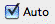
If you tab to or click in the Pay field for an invoice other than the first one in the list and then click the Distribute button, MoneyWorks will begin allocating from that invoice.The Auto-distribute option saves you from having to invoke the Distribute facility manually.
Alternatively, click on the Outstanding amount, and it will be automatically transferred into the Pay column.
Click the Auto check box to automatically distribute the total payments (based on the settings in the Distribute pop-up) as you type in the amount—MoneyWorks will “click” the Distribute button for you. This is very useful if most of the
The Auto option saves you having to invoke the Distribute facility manually.
You can also allocate the receipts to the topmost invoices. This is normally the oldest, but can be altered by clicking on a column heading to sort the list.
Pressing Ctrl-downarrow/⌘-downarrow is a shortcut for clicking the
Distribute button
receipts are for the full amount of the oldest (or only) invoice for the debtor.
If the amount received is less than the outstanding amount for a particular invoice, enter the amount received into the Pay amount. The balance of the invoice will be displayed in red and will remain unpaid (unless you choose to write it off— see Write Off Option if you want to write it off straight away, or, if you need to write it off at a later stage, refer to Write Off Command.
If your customers have been set up with a prompt payment discount, any eligible discounts (as determined by the receipt date) will be honoured (the Disc check box will be ticked).
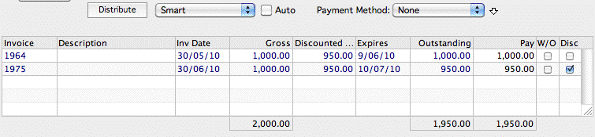
When a prompt payment discount is accepted, MoneyWorks raises a credit note (against the nominated discount account) for each affected invoice to account for the discount. If you don’t wish to honour the discount, reset the Disc checkbox: the invoice will be marked as part paid, and no credit note will be raised.
When you complete a receipt (or a batch of receipts) where you have taken up a prompt payment discount you will be prompted for the general ledger code for the discount (this will default to the one used previously).
Note: The GST/VAT/Tax portion of the discount is determined by the Tax code of the discount account—you should check with your accountant as to the status of Tax on prompt payment discounts.
Note: The prompt payment amount on an invoice will exclude lines coded to general ledger accounts which are not marked as Discountable.
If a debtor overpays—that is, sends you a payment for more than the total of their outstanding invoices—you will not be able to allocate the whole amount to the invoices. In this case, MoneyWorks will ask you if you want to credit the debtor’s account with the amount by which they have overpaid.
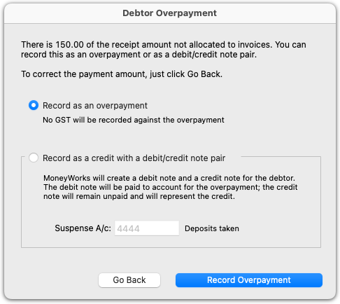
In MoneyWorks 9.1.5 and later, there are two ways of doing this:
Simply credit the account and hold the amount for later allocation. No GST/VAT is calculated on the overpayment using this method. This is the method MoneyWorks has used for debtor overpayments since 1992.
Or, you can have MoneyWorks create a debit note/credit note pair for the amount and use the receipt to pay the debit note, leaving the credit note outstanding. Using this method, GST/VAT will be calculated according to the tax code of the suspense account you nominate.
If the amount by which the debtor has overpaid is slight (a few cents, say), you may want to use the write-off feature to “forget” the overpayment— see Write Off Option.
If you want the debtor's account to be credited for later allocation to an invoice, select the Record as an overpayment radio button, and then click the Record Overpayment button if. No GST/VAT will be calculated on the overpaid amount.
If you want to record the credit as a credit note (and a paid debit note), select the Record as a credit with a debit/credit note pair radio button, enter a suspense account to use on the debit/credit note. GST/VAT will be calculated according to the tax code for the suspense account. Then click the Record Credit button.
If you have made a mistake and want to correct the details of the receipt, click
Go Back.
Since, when receipts are processed, the Accounts Receivable account for the debtor is credited by the full amount of the receipt (not just the amount allocated), the overpayment will appear on your balance sheet as a liability—that is, a credit to the Accounts Receivable account.
If the debtor has overpaid in error, and you want to send back the difference, use the Return Refund To Debtor command. This can be used with either type of overpayment credit.
If a debtor has an overpayment credit (as opposed to a credit note) recorded against them, you will be alerted the next time you process a receipt for that debtor. At that stage you will have the choice of allocating the existing overpayment or a new payment received.
If they have a credit note, that will appear in the list of outstanding invoices to be paid the next time you enter a receipt.
You can have MoneyWorks perform a write-off of an outstanding balance on a debtor invoice as you enter the receipt for that debtor. Use this feature if the debtor has overpaid or underpaid by some trivial amount that is not worth following up.
Let’s say you have a debtor with three outstanding invoices. You have received a cheque for one of these to the value of $450.00. The invoice was for 450.96. If you just enter 450.00 as the pay amount when you process this receipt, the invoice will not be considered to be fully paid. It will come up again next time you process a receipt for this debtor.
You have two options: You could follow up the underpayment with the debtor and demand the extra 96 cents. You would then process this 96 cent receipt in the normal way when you receive it and the invoice will thus be completed.
Alternatively, you may want to forget about the 96 cents and just complete the (slightly underpaid) invoice now. MoneyWorks makes this easy.
Note: In MoneyWorks Gold, a Preference option allows you to limit the amount that can be written-off in this manner.
In this case, the entry would be 450.00.
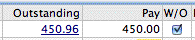
Click the check box in the W/O columnW/O stands for Write Off. Clicking in this box tells MoneyWorks to consider the invoice completely paid.
When you complete the receipt or the batch of receipts, you will need to enter the Write-off Account code
For a batch of receipts, MoneyWorks prompts you for bank and period information for the receipts as usual. In addition, you will be required to specify a Writeoff account. You should already have created a suitable account (usually an expense account) to account for writeoffs.
For a Receipt, you will be prompted for the Write-off account.
If you can’t remember the code just press tab, and MoneyWorks will bring up the Account Choices box for you to find the account code.
For each invoice whose remaining balance you have “Written-off”, MoneyWorks will create a credit note with the description “Write Off”. The credit note will credit the debtor’s Accounts Receivable control account and debit the nominated write off account by the amount written off. It will also include any adjustments that need to be made for GST.
Note: Only one write-off account can be specified per batch of debtor receipts processed. MoneyWorks will remember the writeoff account that you supply and enter it for you next time you use the Write Off feature.